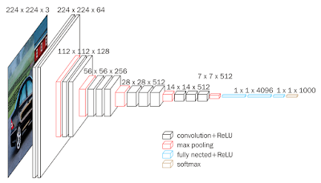

Önceden Eğitilmiş Modeller (Pre-trained Models), Aktarımlı Öğrenme (Transfer Learning), Çiçek Tanıma
Çiçekleri resimlerinden tanımamızı sağlayacak bir yapay zeka programı yazmak istiyoruz. Fakat biliyoruz ki derin öğrenmede daha fazla veri daha iyidir, ama elde fazla veri yok. Veri alttaki gibi olabilir, bu veride 17 çeşit çiçeğin 80'er tane resmi var.
http://www.robots.ox.ac.uk/~vgg/data/flowers/17/
Ornek bazi resimler (ustteki iki dandofil, alttaki iki snowdrop)
Madem elde fazla veri yok, acaba başka bir amaç için eğitilmiş ama yine de obje / resim tanımak için hazırlanmış başka bir modeli alıp onun ağırlıklarını bir şekilde kullanamaz mıyız? Evet bu yapılabilir. ImageNet yarışmasında bir resmi 1000 tane sınıfa atayabilen VGG16 modeli var mesela. ImageNet verisi milyonlarca resim icerir, her sinif basina yuzlerce resim mevcuttur. Bu veri uzerinde egitilmis VGG16'nin bilinen bir evrişimsel (convolutional) derin yapısı var, yarışmada üst-5 sınıflamasında (gerçek etiket tahmin edilen en üst 5 etiketlerden biri mi) 92.5% elde etmiş, ve bu sonucu alan ağırlıklar biliniyor.
Güzel haber şu, Keras kütüphanesi bu tür ünlü YSA yapılarını ve ağırlıklarını paketine dahil etmiş.
from keras.applications.vgg16 import VGG16
base_model = VGG16(weights="imagenet")
base_model.summary()
diyerek VGG16'nin İmageNet ağırlıklarını alabiliriz mesela. Üstteki kod şunu gösterir,
Layer (type) Output Shape Param #
=================================================================
input_1 (InputLayer) (None, 224, 224, 3) 0
block1_conv1 (Conv2D) (None, 224, 224, 64) 1792
block1_conv2 (Conv2D) (None, 224, 224, 64) 36928
block1_pool (MaxPooling2D) (None, 112, 112, 64) 0
block2_conv1 (Conv2D) (None, 112, 112, 128) 73856
block2_conv2 (Conv2D) (None, 112, 112, 128) 147584
block2_pool (MaxPooling2D) (None, 56, 56, 128) 0
block3_conv1 (Conv2D) (None, 56, 56, 256) 295168
block3_conv2 (Conv2D) (None, 56, 56, 256) 590080
block3_conv3 (Conv2D) (None, 56, 56, 256) 590080
block3_pool (MaxPooling2D) (None, 28, 28, 256) 0
block4_conv1 (Conv2D) (None, 28, 28, 512) 1180160
block4_conv2 (Conv2D) (None, 28, 28, 512) 2359808
block4_conv3 (Conv2D) (None, 28, 28, 512) 2359808
block4_pool (MaxPooling2D) (None, 14, 14, 512) 0
block5_conv1 (Conv2D) (None, 14, 14, 512) 2359808
block5_conv2 (Conv2D) (None, 14, 14, 512) 2359808
block5_conv3 (Conv2D) (None, 14, 14, 512) 2359808
block5_pool (MaxPooling2D) (None, 7, 7, 512) 0
flatten (Flatten) (None, 25088) 0
fc1 (Dense) (None, 4096) 102764544
fc2 (Dense) (None, 4096) 16781312
predictions (Dense) (None, 1000) 4097000
=================================================================
Total params: 138,357,544
VGG16'nin yapısını bu çıktıda görüyoruz.
ImageNet ağırlıkları Internet'ten indirilip $HOME/.keras/models altına koyuluyor, ve bir sonraki çağrıda tekrar indirilmesi gerekmiyor.
Önceden eğitilmiş modeli kullanmak ise yarar çünkü her ne kadar VGG16 resimleri 1000 sınıfa ayirmak için yazılmış olsa da sonuçta pek çok katmanı var ve bu katmanlar sınıflamayı öğrenirken genel olarak "bir resim nasıl temsil edilir" işini de öğrenmiş oluyorlar. Ayrıca çok büyük bir veri seti üzerinde eğitildiği için bu işi iyi öğrenmiş olacağını farzediyoruz. O zaman mevcut modeli şu şekilde kullanabiliriz: 1. yöntem yeni eğitim verisindeki (çiçek resimleri) her noktayı teker teker VGG16'ya "tahmin" amaçlı veririz, ama çıktıyı en son katmandan değil sona yakın katmanlardan birinden alırız; bu katmandaki ağırlıklar bir resmi temsiliyet açısından oldukca iyi konumda olmadırlar (öyle ki bu ağırlıklar birkaç katman sonrasındaki tahminlerin yüzde 92 üstünde başarı elde etmesini sağlamışlar), bu ağırlıkları bizim yeni resmi temsil eden bir "özellik vektörü" olarak kullanırız (fikir alttaki bağlantıdan).
https://gogul09.github.io/software/flower-recognition-deep-learning
Bu vektörleri yeni eğitim verisindeki tüm resimler için kullanıp yeni bir eğitim / test verisi yaratırız, ve bu veri üzerinde artık Lojistik Regresyon bile kullanabiliriz. Öyle ya özellik vektörü düz bir veri haline geldi, artık basit regresyon iyi bir sonuç vermeli. Tabii basit regresyonun etiketleri ImageNet etiketlerinden farklı olacak, bizde 17 etiket var, ImageNet'te 1000.
Bahsettigimiz katman numarasi için Keras ile
base_model = VGG16(weights="imagenet")
model = Model(input=base_model.input, output=base_model.get_layer('fc1').output)
yeterli. Artik model.predict(..) dersek bir resim icin 4096 boyutlu özellik vektörü üretilir.
Tekniği çiçek resimlerinde deneyelim. Üstteki bağlantıdaki verinin zip halini kullanıyoruz,
https://drive.google.com/file/d/1N5VbewVJZjAhBPlFFavmG44HvZeE9Zs5/view?usp=sharing
Kod
from keras.applications.vgg16 import VGG16, preprocess_input
from keras.applications.xception import Xception, preprocess_input
from keras.preprocessing import image
from keras.models import Model
from keras.models import model_from_json
from keras.layers import Input
import re, collections, zipfile
import pandas as pd
import numpy as np
base_model = VGG16(weights="imagenet")
model = Model(input=base_model.input, output=base_model.get_layer('fc1').output)
with zipfile.ZipFile('[DIZIN]/17flowers.zip', 'r') as z:
im_files_orig = list(z.namelist())
im_files = [x for x in im_files_orig if ".jpg" in x and "image_" in x]
class_names = ["daffodil", "snowdrop", "lilyvalley", "bluebell", "crocus",
"iris", "tigerlily", "tulip", "fritillary", "sunflower",
"daisy", "coltsfoot", "dandelion", "cowslip", "buttercup",
"windflower", "pansy"]
features = []
labels = []
with zipfile.ZipFile('[DIZIN]/17flowers.zip', 'r') as z:
for i,flower in enumerate(class_names):
label = class_names[i]
for f in im_files[(i80):(i+1)80]:
x = image.load_img(z.open(f), target_size=(224, 224))
x = image.img_to_array(x)
x = preprocess_input(np.expand_dims(x.copy(), axis=0))
feature = model.predict(x)
flat = feature.flatten()
features.append(flat)
labels.append(label)
labels_dict = {}
for x in labels:
if x not in labels_dict: labels_dict[x] = len(labels_dict)
labels2 = [labels_dict[x] for x in labels]
from sklearn.model_selection import train_test_split
x_train, x_test, y_train, y_test = train_test_split(features, labels2, random_state=42, test_size=0.05)
from sklearn.linear_model import LogisticRegression, SGDClassifier
clf = LogisticRegression()
clf.fit(x_train, y_train)
rank_1 = 0
rank_5 = 0
for (lab, feat) in zip(y_test, x_test):
predictions = clf.predict_proba(np.atleast_2d(feat))[0]
predictions = np.argsort(predictions)[::-1][:5]
if lab == predictions[0]:
rank_1 += 1
if lab in predictions:
rank_5 += 1
rank_1 = (rank_1 / float(len(y_test))) * 100
rank_5 = (rank_5 / float(len(y_test))) * 100
print (rank_1)
print (rank_5)
Bu teknikle elde edilecek sonuç tek tahmin üst-1 için yüzde 88, üst-5 için yüzde 100. Gayet iyi. Eğer eğitim için sadece eldeki verileri kullansaydık bu sonuç erişmek mümkün olmazdı.
Akla gelebilir, eğer fc1 katmanındaki ağırlıkları lojistik regresyon için kullandıysak, o katmandan dallanıp yeni bir derin ağ yaratıp bu ağın son katmanını 17 sınıf için tanımlasak ve bu ağı Keras üzerinden eğitsek olmaz mı?
Olur. Burada bazı numaralar, sadece son katmanların eğitilmesi için önceki katmanları "dondurmak", böylece o ağırlıklar hiç değişmez, sadece son katman değişir. Ya da üstte fc1'den özellik aldığımıza göre fc1'e kadar (dahil olmak üzere) dondururuz, sonra fc2 ve son etiket tahmin katmanını serbest bırakırız. Şuna benzer bir kod olabilir,
for i in range(len(base_model.layers-2)): ] model.layers[i].trainable = False
num_classes = 17
predictions = Dense(num_classes, activation = 'relu')(output = base_model.get_layer('fc2').output )
model = Model(input = base_model.input, output = predictions)
model.compile(optimizer='adam', loss='categorical_crossentropy', metrics=['accuracy'])
Tabii eğitim için veri balyası (batch) üreten bir kod eklenecek, bunlar üstteki eğitim şekline verilecek, vs. vs. Bu okuyucuya odev olsun.
Hangi yaklaşımın daha uygun olacağı uygulamaya göre değisebilir.
VGG-16 yerine imaj tanıma için eğitilmiş farklı bir YSA da kullanabilirdik. Mesela Keras'ta ünlü bir diğer model ResNet50 modelidir.
Soru
İmageNet 1000 kategorisinde neler var? 17 çiçek resmiyle alakası ne?
Cevap
1000 kategoride bir sürü günlük hayattan obje var, ev, köpek, kedi, araba, vs. Çiçek resmi de vardır herhalde, ama bizim 17 kategorideki çiçekler olmayabilir. Ama o 1000 kategori üzerinden milyonlara resme bakarak öğrenilmiş bir YSA, başlangıç noktası olarak 17 kategorili yeni çiçek resimleri için faydalı olur.
